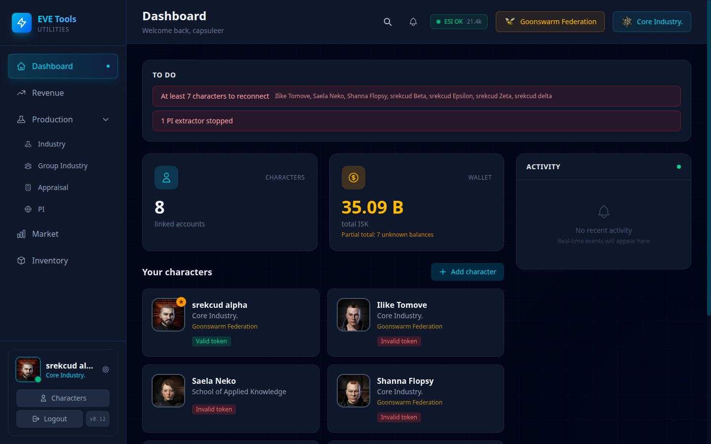
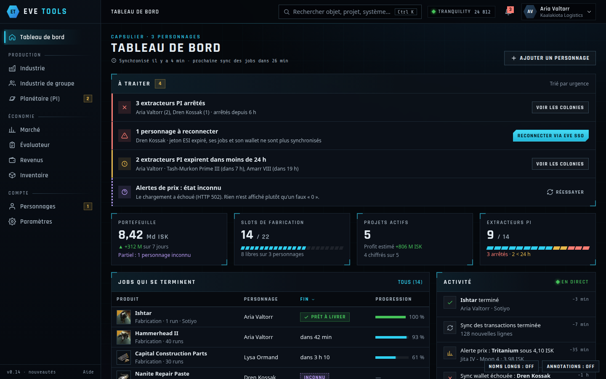
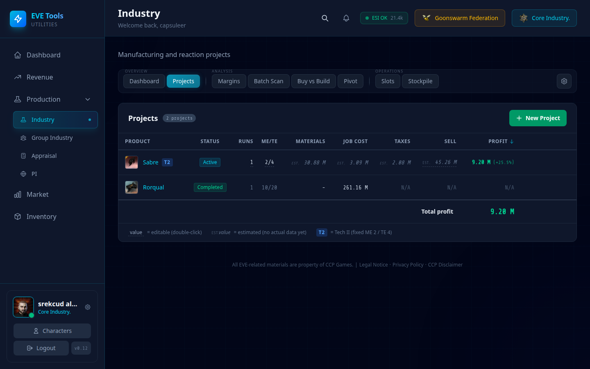
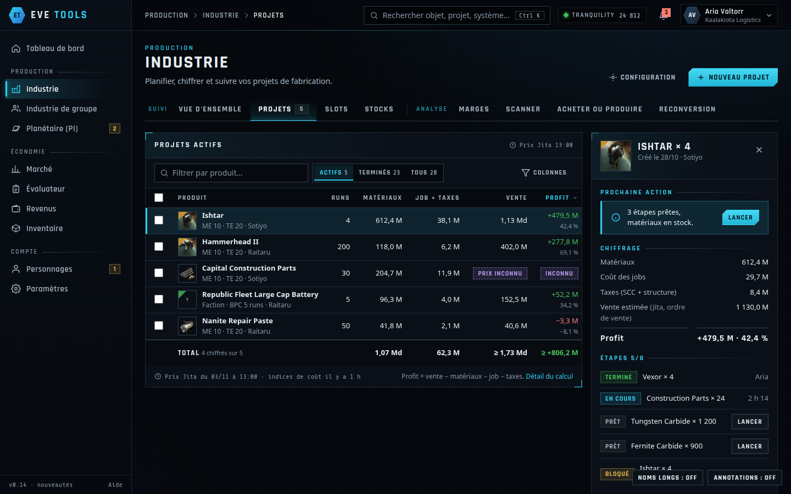
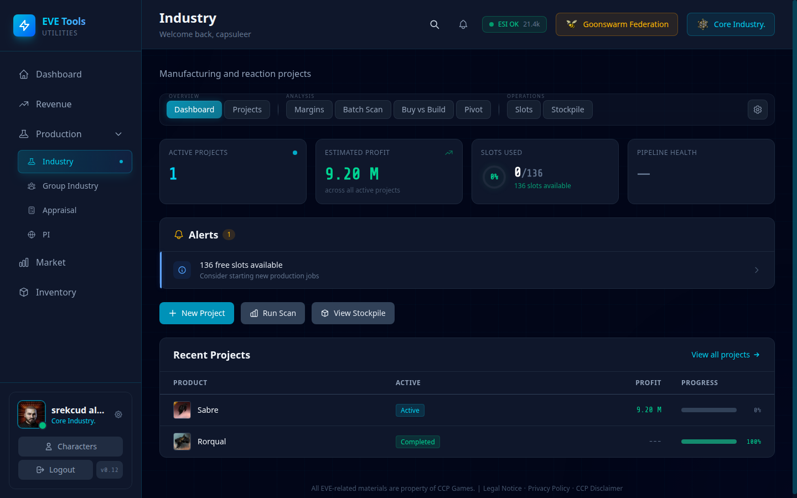
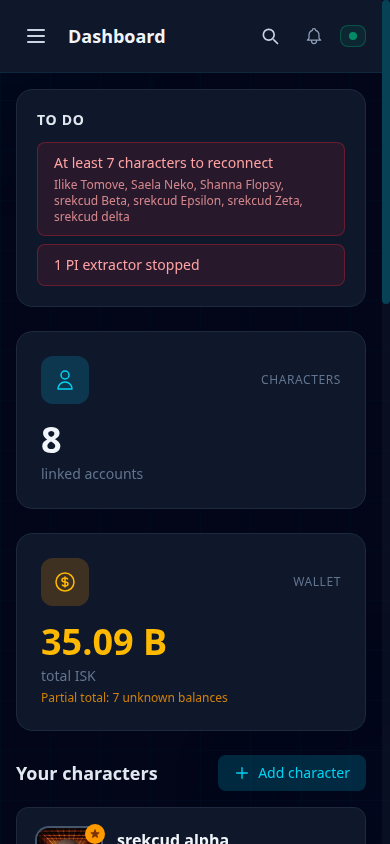
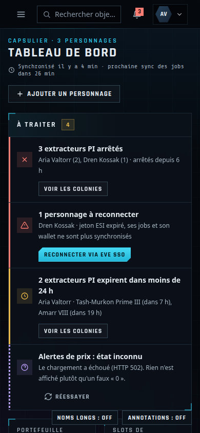

Avant / après
À gauche, l'app actuelle (base locale, personnages réels, 1440 × 900). À droite, la maquette à la même taille. Les maquettes affichent des données fictives : on compare la structure et la lisibilité, pas les chiffres.
Accessibilité mesurée (Lighthouse 12)
| Page | App avant | App après étape 1 | Maquette | Échecs avant |
|---|---|---|---|---|
| Tableau de bord | 91 | 100 | 100 | 10 contrastes insuffisants, 1 bouton sans nom |
| Industrie | 90 | 99 | 100 | 13 contrastes insuffisants, 1 bouton sans nom, 2 textes alternatifs redondants |
| Composants et états | — | — | 100 | — |
Lighthouse ne contrôle que ce qui est automatisable (contraste, noms, structure). Il ne mesure ni le mouvement, ni la clarté des libellés, ni la hiérarchie : c'est le rôle du test des 5 secondes.
Tableau de bord


- Le bloc « To do » existe déjà ; la proposition ajoute la gravité, le « depuis quand » et le bouton qui règle chaque ligne.
- L'en-tête actuel consacre deux gros badges à l'alliance et la corporation ; la proposition y met le fil d'Ariane et la recherche visible.
- Au-dessus de la ligne de flottaison : 2 indicateurs (nombre de personnages, portefeuille) et 4 cartes personnage actuellement, contre slots, projets chiffrés, PI et jobs qui se terminent dans la proposition.
Industrie · Projets


- Valeurs estimées en petit italique gris (« EST. ») et « N/A » actuellement ; la proposition nomme la source du prix (« Jita, ordre de vente ») et affiche « Prix inconnu » quand il manque.
- Le détail d'un projet s'ouvre à côté du tableau au lieu de changer de page.
Industrie · Vue d'ensemble actuelle

- « Pipeline health » affiche un tiret sans explication ; la proposition distingue « inconnu » (violet, pointillés) d'une valeur vide.
- L'alerte « 136 free slots available » est en bleu info ; dans la proposition, les slots libres sont une jauge segmentée et n'occupent pas une ligne d'alerte.
Mobile (390 px)

